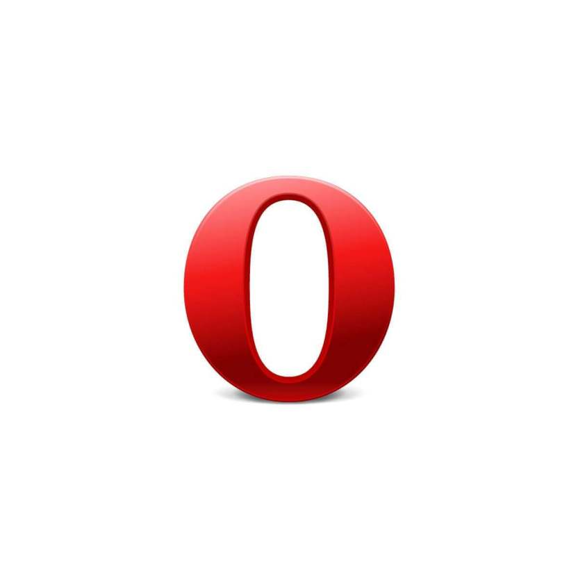

Es uno de los más conocidos y más usados, básicamente porque es el que asegura una velocidad mayor.
Saltó al escenario a principios de 2008. Desde entonces ha conseguido pasar de una cuota de
mercado del 0% al actual 25% del mes pasado. Se inicia rápidamente desde el escritorio,
carga las páginas de forma instantánea y ejecuta aplicaciones web complejas a gran velocidad.
Su gran ventaja respecto a su competencia es también su principal inconveniente: Google.
Opera
Contiene Una Amplia Variedad De Temas

Fig2.-Navegador Opera
Es el navegador web alternativo por excelencia. Es también uno de los más
veteranos y, durante muchos años, ha sido de los más utilizados en los teléfonos
móviles, hasta la popularización de los smartphones. Está desarrollado por una
compañía noruega y, al igual que Firefox, no tiene ánimo de lucro.
Su última versión, el Opera 15, usa el mismo motor que Google Chrome, por lo que
se pueden utilizar en él las mismas extensionse disponibles para el navegador de Google.
Además, incorpora una novedad muy interesante, lo que ellos llaman el Estante,
una reinvención de los marcadores o favoritos que permite ir guardando páginas que
interesan para leerlas posteriormente.
Mozilla Firefox
Altamente Personalizable
Fig3.-Navegador Firefox
Para mucha gente es el navegador que le transmite más confianza,
seguramente porque, aparte de ser uno de los más veteranos (salió en el año 2003)
es sólido, estable y presenta muy pocos errores. Firefox, el segundo navegador más
utilizado en Internet, se caracteriza por ser un programa independiente, y para
muchos es su favorito porque no tiene ánimo de lucro. Ha sido desarrollado a lo largo de
los años por decenas de programadores que lo van mejorando en cada actualización.